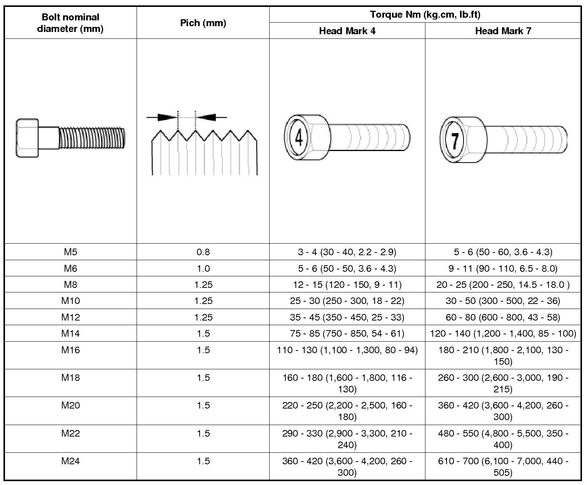

Tightening Torque Table of Standard Parts
Tightening Torque Table Of Standard Parts

NOTE:
1. The torques shown in the table are standard values under the following conditions.
- Nuts and bolts are made of galvanized steel bar.
- Galvanized plain steel washers are inserted.
- All nuts, bolts and plain washers are dry.
2. The torques shown in the table are not applicable.
- When spring washers, toothed washers and the like are inserted.
- If plastic parts are fastened.
- If self-tapping screws or self-locking nuts are used.
- If threads and surfaces are coated with oil.
3. Reduce the torque values to the indicated percentage of the standard value under the following conditions.
- If spring washers are used : 85%
- If threads and bearing surfaces are stained with oil : 85%